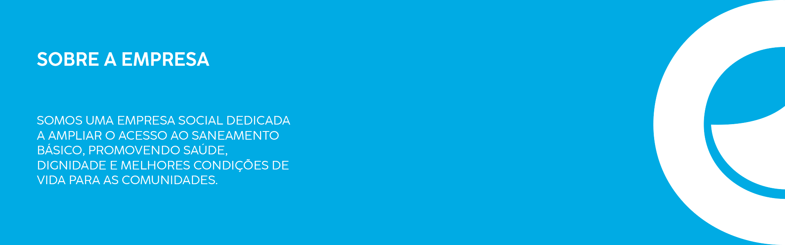
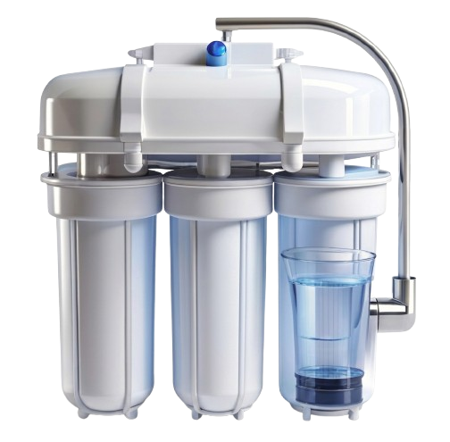
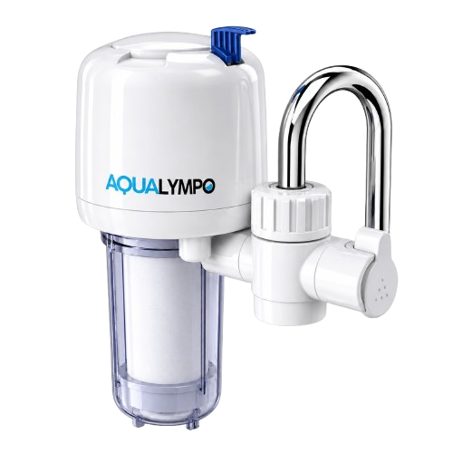
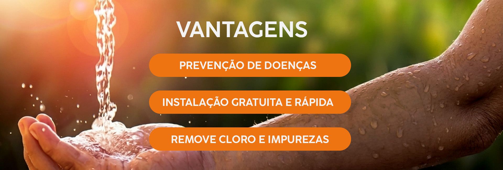
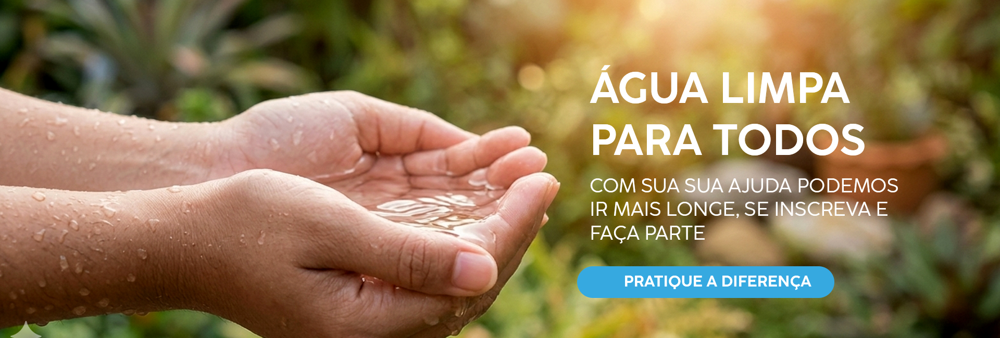

NOSSOS PRODUTOS

MINI ESTAÇÕES DE PURIFICAÇÃO
A estação de purificação de água filtra e elimina impurezas, bactérias e resíduos através de sistemas de tratamento, garantindo água limpa, segura e própria para consumo.
FILTROS DE ÁGUA ACOPLADOS
O filtro serve para purificar a água da torneira, removendo cloro, sujeira e odores. Ele garante água segura e saborosa para beber ou cozinhar, além de gerar economia e reduzir o uso de garrafas plásticas.


DEPOIMENTOS
Maria Lúcia
Parabéns pelo olhar social! Levar saúde para quem mais precisa é o que realmente faz a diferença.
Thomaz
Muito bom ver uma empresa tratando o saneamento como o direito humano que ele é. Continuem assim!
Júlia
O serviço é muito bom, especialmente pelo olhar social voltado para quem mais precisa. É gratificante ver essa evolução.

INSCREVA-SE
LOCALIZAÇÃO
ONDE ESTAMOS
Rua Pastor Antonio Canossa
Residencial dos Ipês
Catanduva - SP
CEP: 15808-524
VER NO GOOGLE MAPSCONTATO
(00) 00000-0000
@aqualympo.br
suporteaqualympo@gmail.com